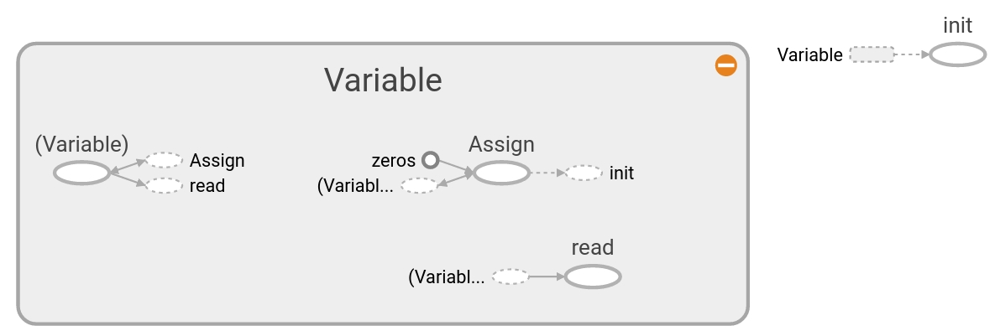

Note
在这一章中，我们会介绍基本概念，以便理解TensorFlow是如何工作以及如何获得本书的数据和额外资源。
变量和张量的声明¶
本节主要介绍在TensorFlow中创建张量以及如何将它们进行初始化。我们也会介绍这些操作如何在Tensorboard中表征出来。
下载本节 Jupyter Notebook
资源库¶
大多数都是官方资源和文章，文章都是TensorFlow的文章和深度学习的资源。
本章学习模块¶
tensorflow.zeros¶
Creates a tensor with all elements set to zero.
This operation returns a tensor of type dtype with shape shape and all elements set to zero.
>>> tf.zeros([3, 4], tf.int32)
<tf.Tensor: shape=(3, 4), dtype=int32, numpy=
array([[0, 0, 0, 0],
[0, 0, 0, 0],
[0, 0, 0, 0]], dtype=int32)>
- param shape
A list of integers, a tuple of integers, or a 1-D Tensor of type int32.
- param dtype
The DType of an element in the resulting Tensor.
- param name
Optional string. A name for the operation.
- returns
A Tensor with all elements set to zero.
tensorflow.ones¶
Creates a tensor with all elements set to one (1).
See also tf.ones_like.
This operation returns a tensor of type dtype with shape shape and all elements set to one.
>>> tf.ones([3, 4], tf.int32)
<tf.Tensor: shape=(3, 4), dtype=int32, numpy=
array([[1, 1, 1, 1],
[1, 1, 1, 1],
[1, 1, 1, 1]], dtype=int32)>
- param shape
A list of integers, a tuple of integers, or a 1-D Tensor of type int32.
- param dtype
Optional DType of an element in the resulting Tensor. Default is tf.float32.
- param name
Optional string. A name for the operation.
- returns
A Tensor with all elements set to one (1).
tensorflow.fill¶
Creates a tensor filled with a scalar value.
This operation creates a tensor of shape dims and fills it with value.
For example:
>>> tf.fill([2, 3], 9)
<tf.Tensor: shape=(2, 3), dtype=int32, numpy=
array([[9, 9, 9],
[9, 9, 9]], dtype=int32)>
tf.fill evaluates at graph runtime and supports dynamic shapes based on other runtime tf.Tensors, unlike tf.constant(value, shape=dims), which embeds the value as a Const node.
- param dims
A 1-D sequence of non-negative numbers. Represents the shape of the output tf.Tensor. Entries should be of type: int32, int64.
- param value
A value to fill the returned tf.Tensor.
- param name
Optional string. The name of the output tf.Tensor.
- returns
A tf.Tensor with shape dims and the same dtype as value.
- raises InvalidArgumentError
dims contains negative entries.
- raises NotFoundError
dims contains non-integer entries.
@compatibility(numpy) Similar to np.full. In numpy, more parameters are supported. Passing a number argument as the shape (np.full(5, value)) is valid in numpy for specifying a 1-D shaped result, while TensorFlow does not support this syntax. @end_compatibility
tensorflow.constant¶
Creates a constant tensor from a tensor-like object.
Note: All eager tf.Tensor values are immutable (in contrast to tf.Variable). There is nothing especially _constant_ about the value returned from tf.constant. This function it is not fundamentally different from tf.convert_to_tensor. The name tf.constant comes from the symbolic APIs (like tf.data or keras functional models) where the value is embeded in a Const node in the tf.Graph. tf.constant is useful for asserting that the value can be embedded that way.
If the argument dtype is not specified, then the type is inferred from the type of value.
>>> # Constant 1-D Tensor from a python list.
>>> tf.constant([1, 2, 3, 4, 5, 6])
<tf.Tensor: shape=(6,), dtype=int32,
numpy=array([1, 2, 3, 4, 5, 6], dtype=int32)>
>>> # Or a numpy array
>>> a = np.array([[1, 2, 3], [4, 5, 6]])
>>> tf.constant(a)
<tf.Tensor: shape=(2, 3), dtype=int64, numpy=
array([[1, 2, 3],
[4, 5, 6]])>
If dtype is specified the resulting tensor values are cast to the requested dtype.
>>> tf.constant([1, 2, 3, 4, 5, 6], dtype=tf.float64)
<tf.Tensor: shape=(6,), dtype=float64,
numpy=array([1., 2., 3., 4., 5., 6.])>
If shape is set, the value is reshaped to match. Scalars are expanded to fill the shape:
>>> tf.constant(0, shape=(2, 3))
<tf.Tensor: shape=(2, 3), dtype=int32, numpy=
array([[0, 0, 0],
[0, 0, 0]], dtype=int32)>
>>> tf.constant([1, 2, 3, 4, 5, 6], shape=[2, 3])
<tf.Tensor: shape=(2, 3), dtype=int32, numpy=
array([[1, 2, 3],
[4, 5, 6]], dtype=int32)>
tf.constant has no effect if an eager Tensor is passed as the value, it even transmits gradients:
>>> v = tf.Variable([0.0])
>>> with tf.GradientTape() as g:
... loss = tf.constant(v + v)
>>> g.gradient(loss, v).numpy()
array([2.], dtype=float32)
But, since tf.constant embeds the value in the tf.Graph this fails for symbolic tensors:
>>> i = tf.keras.layers.Input(shape=[None, None])
>>> t = tf.constant(i)
Traceback (most recent call last):
...
NotImplementedError: ...
tf.constant will _always_ create CPU (host) tensors. In order to create tensors on other devices, use tf.identity. (If the value is an eager Tensor, however, the tensor will be returned unmodified as mentioned above.)
Related Ops:
tf.convert_to_tensor is similar but: * It has no shape argument. * Symbolic tensors are allowed to pass through.
>>> i = tf.keras.layers.Input(shape=[None, None]) >>> t = tf.convert_to_tensor(i)
tf.fill: differs in a few ways: * tf.constant supports arbitrary constants, not just uniform scalar
Tensors like tf.fill.
tf.fill creates an Op in the graph that is expanded at runtime, so it can efficiently represent large tensors.
Since tf.fill does not embed the value, it can produce dynamically sized outputs.
- param value
A constant value (or list) of output type dtype.
- param dtype
The type of the elements of the resulting tensor.
- param shape
Optional dimensions of resulting tensor.
- param name
Optional name for the tensor.
- returns
A Constant Tensor.
- raises TypeError
if shape is incorrectly specified or unsupported.
- raises ValueError
if called on a symbolic tensor.
tensorflow.zeros_like¶
Creates a tensor with all elements set to zero.
See also tf.zeros.
Given a single tensor or array-like object (input), this operation returns a tensor of the same type and shape as input with all elements set to zero. Optionally, you can use dtype to specify a new type for the returned tensor.
Examples
>>> tensor = tf.constant([[1, 2, 3], [4, 5, 6]])
>>> tf.zeros_like(tensor)
<tf.Tensor: shape=(2, 3), dtype=int32, numpy=
array([[0, 0, 0],
[0, 0, 0]], dtype=int32)>
>>> tf.zeros_like(tensor, dtype=tf.float32)
<tf.Tensor: shape=(2, 3), dtype=float32, numpy=
array([[0., 0., 0.],
[0., 0., 0.]], dtype=float32)>
>>> tf.zeros_like([[1, 2, 3], [4, 5, 6]])
<tf.Tensor: shape=(2, 3), dtype=int32, numpy=
array([[0, 0, 0],
[0, 0, 0]], dtype=int32)>
- param input
A Tensor or array-like object.
- param dtype
A type for the returned Tensor. Must be float16, float32, float64, int8, uint8, int16, uint16, int32, int64, complex64, complex128, bool or string (optional).
- param name
A name for the operation (optional).
- returns
A Tensor with all elements set to zero.
tensorflow.ones_like¶
Creates a tensor of all ones that has the same shape as the input.
See also tf.ones.
Given a single tensor (tensor), this operation returns a tensor of the same type and shape as tensor with all elements set to 1. Optionally, you can use dtype to specify a new type for the returned tensor.
For example:
>>> tensor = tf.constant([[1, 2, 3], [4, 5, 6]])
>>> tf.ones_like(tensor)
<tf.Tensor: shape=(2, 3), dtype=int32, numpy=
array([[1, 1, 1],
[1, 1, 1]], dtype=int32)>
- param input
A Tensor.
- param dtype
A type for the returned Tensor. Must be float16, float32, float64, int8, uint8, int16, uint16, int32, int64, complex64, complex128, bool or string.
- param name
A name for the operation (optional).
- returns
A Tensor with all elements set to one.
tensorflow.linspace¶
Generates values in an interval.
A sequence of num evenly-spaced values are generated beginning at start. If num > 1, the values in the sequence increase by stop - start / num - 1, so that the last one is exactly stop.
For example:
`
tf.linspace(10.0, 12.0, 3, name="linspace") => [ 10.0 11.0 12.0]
`
- param start
A Tensor. Must be one of the following types: bfloat16, half, float32, float64. 0-D tensor. First entry in the range.
- param stop
A Tensor. Must have the same type as start. 0-D tensor. Last entry in the range.
- param num
A Tensor. Must be one of the following types: int32, int64. 0-D tensor. Number of values to generate.
- param name
A name for the operation (optional).
- returns
A Tensor. Has the same type as start.
tensorflow.range¶
Creates a sequence of numbers.
Creates a sequence of numbers that begins at start and extends by increments of delta up to but not including limit.
The dtype of the resulting tensor is inferred from the inputs unless it is provided explicitly.
Like the Python builtin range, start defaults to 0, so that range(n) = range(0, n).
For example:
>>> start = 3
>>> limit = 18
>>> delta = 3
>>> tf.range(start, limit, delta)
<tf.Tensor: shape=(5,), dtype=int32,
numpy=array([ 3, 6, 9, 12, 15], dtype=int32)>
>>> start = 3
>>> limit = 1
>>> delta = -0.5
>>> tf.range(start, limit, delta)
<tf.Tensor: shape=(4,), dtype=float32,
numpy=array([3. , 2.5, 2. , 1.5], dtype=float32)>
>>> limit = 5
>>> tf.range(limit)
<tf.Tensor: shape=(5,), dtype=int32,
numpy=array([0, 1, 2, 3, 4], dtype=int32)>
- param start
A 0-D Tensor (scalar). Acts as first entry in the range if limit is not None; otherwise, acts as range limit and first entry defaults to 0.
- param limit
A 0-D Tensor (scalar). Upper limit of sequence, exclusive. If None, defaults to the value of start while the first entry of the range defaults to 0.
- param delta
A 0-D Tensor (scalar). Number that increments start. Defaults to 1.
- param dtype
The type of the elements of the resulting tensor.
- param name
A name for the operation. Defaults to "range".
- returns
An 1-D Tensor of type dtype.
@compatibility(numpy) Equivalent to np.arange @end_compatibility
tensorflow.random_uniform_initializer¶
Initializer that generates tensors with a uniform distribution.
Initializers allow you to pre-specify an initialization strategy, encoded in the Initializer object, without knowing the shape and dtype of the variable being initialized.
Examples:
>>> def make_variables(k, initializer):
... return (tf.Variable(initializer(shape=[k], dtype=tf.float32)),
... tf.Variable(initializer(shape=[k, k], dtype=tf.float32)))
>>> v1, v2 = make_variables(3, tf.ones_initializer())
>>> v1
<tf.Variable ... shape=(3,) ... numpy=array([1., 1., 1.], dtype=float32)>
>>> v2
<tf.Variable ... shape=(3, 3) ... numpy=
array([[1., 1., 1.],
[1., 1., 1.],
[1., 1., 1.]], dtype=float32)>
>>> make_variables(4, tf.random_uniform_initializer(minval=-1., maxval=1.))
(<tf.Variable...shape=(4,) dtype=float32...>, <tf.Variable...shape=(4, 4) ...
- param minval
A python scalar or a scalar tensor. Lower bound of the range of random values to generate (inclusive).
- param maxval
A python scalar or a scalar tensor. Upper bound of the range of random values to generate (exclusive).
- param seed
A Python integer. Used to create random seeds. See tf.random.set_seed for behavior.
tensorflow.random_normal_initializer¶
Initializer that generates tensors with a normal distribution.
Initializers allow you to pre-specify an initialization strategy, encoded in the Initializer object, without knowing the shape and dtype of the variable being initialized.
Examples:
>>> def make_variables(k, initializer):
... return (tf.Variable(initializer(shape=[k], dtype=tf.float32)),
... tf.Variable(initializer(shape=[k, k], dtype=tf.float32)))
>>> v1, v2 = make_variables(3,
... tf.random_normal_initializer(mean=1., stddev=2.))
>>> v1
<tf.Variable ... shape=(3,) ... numpy=array([...], dtype=float32)>
>>> v2
<tf.Variable ... shape=(3, 3) ... numpy=
...
>>> make_variables(4, tf.random_uniform_initializer(minval=-1., maxval=1.))
(<tf.Variable...shape=(4,) dtype=float32...>, <tf.Variable...shape=(4, 4) ...
- param mean
a python scalar or a scalar tensor. Mean of the random values to generate.
- param stddev
a python scalar or a scalar tensor. Standard deviation of the random values to generate.
- param seed
A Python integer. Used to create random seeds. See tf.random.set_seed for behavior.